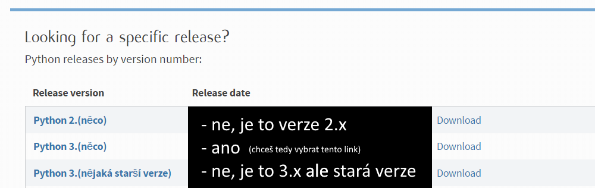
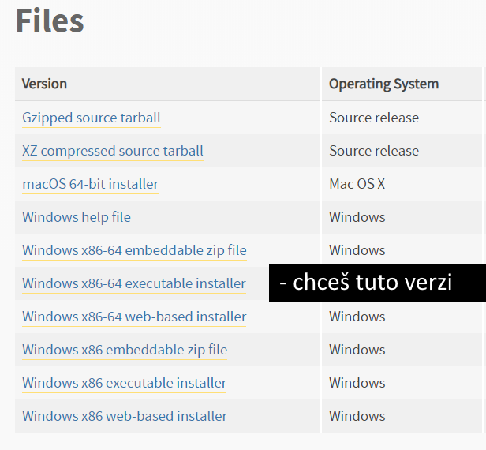
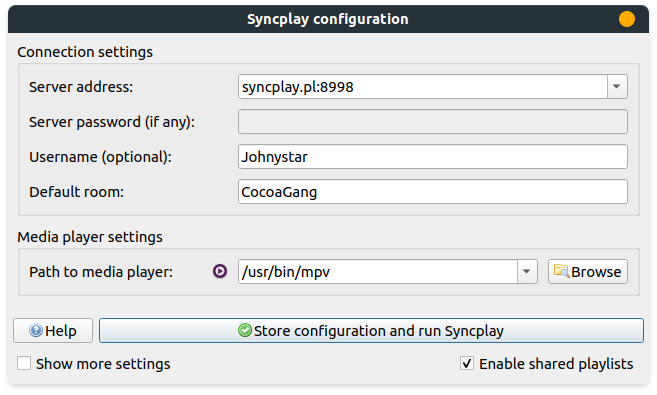

mpv + youtube-dl
Pokud máš na systému nainstalované youtube-dl, mpv je schopné rozjet cokoliv s čím si youtube-dl poradí:
- YouTube (videa, kanály, playlisty, livestreamy, ..)
- Twitch (klipy, streamy, videa, ...)
- Reddit (posty)
- Vimeo (videa, alba, kanály, ...)
- Twitter (broadcasty, ...)
- obrovskou hromadu dalších (skoro až moc xd)
Na přehrávání online videí v mpv (což samozřejmě funguje i se Syncplayem) potřebuješ:
- mpv (návod k instalaci zde)
- youtube-dl (instalace popsána níže)
Ano, instalace na Windowsu není triviální, ale rozjede to ve výsledku skoro cokoliv. V případě problémů se obraťte na Johnystar.
Jo a návod na následné použití potom najdeš úplně dole
Instalace youtube-dl
Poznámka: youtube-dl je skvělá terminálová aplikace napsaná v Pythonu. mpv ji používá pro získávání videí a streamů z cílových stránek. Jako terminálová aplikace funguje velmi dobře a je rychlejší na stahování videí než webové stránky - pokud máš zájem tak tě rád naučím ji používat!
Windows
Link na stránku s Pythonem: https://www.python.org/downloads/. Zaskroluj úplně dolů dokud nenajdeš tohle:

Jakmile vybereš tu správnou verzi a klikneš na ní (v případě obrázku klikneš na text "Python 3.(něco)"), tak zaskroluj dolů dokud nenajdeš tohle:

Tak jak je na obrázku naznačeno, chceš vybrat verzi "Windows x86-64 executable installer".
- instalace:
- customize installation
- pip ANO
- for all users ANO
- next
- add Python to environment variables ANO
- precompile standard library ANO
- neměň cestu instalace!
- install
- ve Start menu vyhledej CMD, klikni pravým a otevří jako správce/administrátor
- do CMD zadej:
python -m pip install -U youtube-dl
Linux - Debian (Ubuntu, Mint, Elementary, Pop!os, ...)
- v terminálu:
sudo apt get update && sudo apt get upgrade && sudo apt install -y python3 python3-pip ffmpegpython3 -m pip install -U youtube-dl
Jak použít pro sledování ve více lidech
Normálně když chceš pustit přes Syncplay video za pomocí mpv:
- zapneš Syncplay a připojíš se na Syncplay room
- do mpv přesuneš soubor
Online videa se pouští podobně (je více způsobů, ale tento je noob-friendly, jednoduchý na pochopení a i na popsání):
- zapneš Syncplay a připojíš se na Syncplay room
- (najdeš si URL videa, playlistu, streamu, ... na který se chceš podívat)
- přesuneš URL (text) do mpv (buď přímo z URL baru prolížeče a nebo například z textového editoru - označíš a přetáhneš do mpv)
- ANO, DOSLOVA PŘESUNEŠ
- úplně stejně jako když chceš přesunout soubor
- označíš a táhneš myší dokud to není nad mpv a potom pustíš
- nehledej v tom žádné složitosti
Jak použít pro sledování v jednom
Zcela stejně, akorát místo Syncplaye přímo zapneš mpv.
Poznámka
Ověř si že máš v Syncplayi nastavený mpv místo VLC. Viz "Path to media player:" nastavení dole.
Tohle nastavení funguje na mé instalaci Linuxu! Na tvé instalaci (potenciálně i jiného operačního sytému - třeba Windowsu) bude cesta k mpv jiná!
